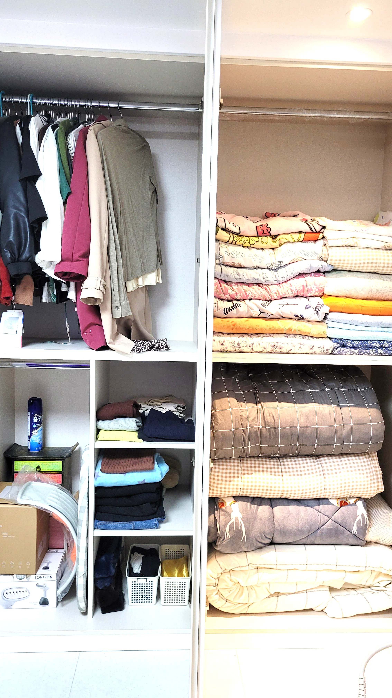

항동4가포장이사

항동4가 이사가격 비용 어떻게될까요 100%무료견적 보기항동4가포장이사포장이사 업체 선택에서 가장 중요한 정보 중 하나가 실제 이용 후기입니다. 후기에는 포장 품질, 운송 안전, 직원 친절도 등 실제 경험이 포함되어 있어 신뢰할 수 있다고 하네요. 온라인 포장이사 비교 서비스는 여러 업체의 후기를 함께 제공하며, 클릭 몇 번으로 무료 견적까지 받을 수 있습니다. 후기와 견적을 동시에 확인하면 합리적이고 안전하게 이사를 준비할 수 있습니다.
포장이사 업체를 선택할 때 비용과 서비스 비교는 필수입니다. 업체별 가격, 추가 비용, 보험, 보관 서비스 등 조건이 다르기 때문에 비교하지 않으면 손해를 볼 수 있다고 하네요. 온라인 포장이사비교 서비스는 클릭 몇 번으로 여러 업체의 조건을 한눈에 확인할 수 있으며, 무료 견적 신청으로 시간과 비용을 절약하면서 안전하게 이사를 준비할 수 있습니다.
항동4가 이사가격 비용 어떻게될까요 100%무료견적 보기

신뢰할 수 있는 업체를 찾고 싶다면 포장이사 추천 서비스를 활용하는 것이 좋습니다. 추천 서비스는 업체 평가, 고객 후기, 서비스 수준 등을 종합해 신뢰도 높은 업체를 안내한다고 하네요. 온라인 비교 서비스를 통해 추천 업체의 견적과 조건을 확인하면 클릭 몇 번으로 안전하고 효율적인 이사를 준비할 수 있습니다. 무료 견적 신청으로 시간과 비용을 절약할 수 있는 장점도 있습니다.
🚛100% 무료견적 알아보기🚛 
항동4가 이사가격 비용 어떻게될까요 100%무료견적 보기신뢰할 수 있는 업체를 찾고 싶다면 포장이사 추천 서비스를 활용하는 것이 좋습니다. 추천 서비스는 업체 평가, 고객 후기, 서비스 수준 등을 종합해 신뢰도 높은 업체를 안내한다고 하네요. 온라인 비교 서비스를 통해 추천 업체의 견적과 조건을 확인하면 클릭 몇 번으로 안전하고 효율적인 이사를 준비할 수 있습니다. 무료 견적 신청으로 시간과 비용을 절약할 수 있는 장점도 있습니다.
포장이사 무료견적 서비스
| 항동4가포장이사 | 항동4가이사업체 | 항동4가이삿짐센터 |
|---|---|---|
| 항동4가포장이사 | 포장이사비교견적 | 이사무료견적 |
| 항동4가이사업체 | 이삿짐센터 | 포장이사업체비교 |
| 항동4가이삿짐센터 | 포장이사가격 | 이사업체추천 |


FAQ
전국 어디든 100% 무료 비교견적 가능합니다.
포장이사는 전문 팀이 짐 포장부터 운송, 정리까지 전 과정을 책임지는 서비스입니다. 일반 이사는 운송만 제공하는 경우가 많아, 포장과 정리를 직접 해야 하므로 체력과 시간이 많이 필요합니다. 포장이사를 이용하면 시간과 비용을 절약하면서 안전하게 이사를 진행할 수 있습니다.